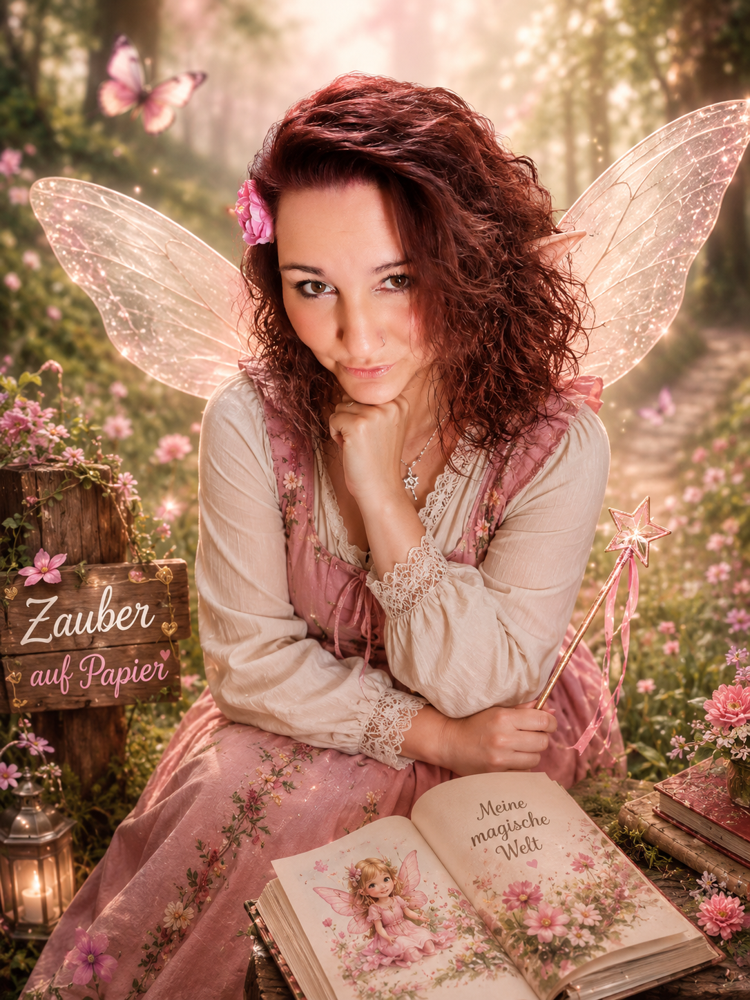
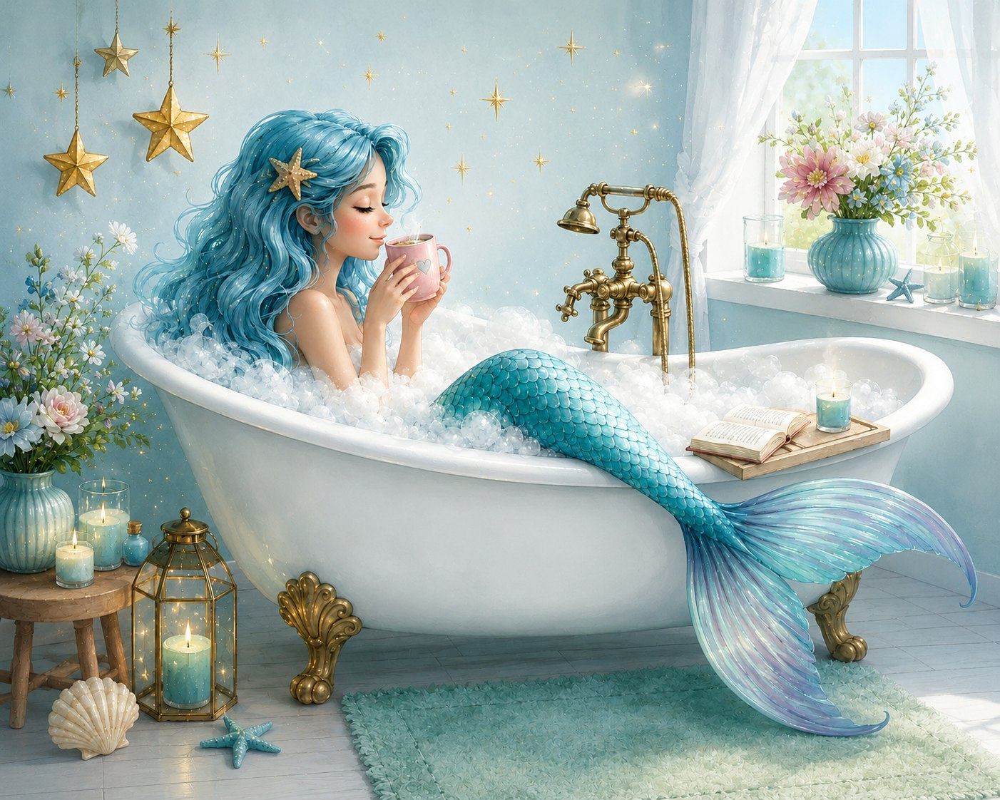
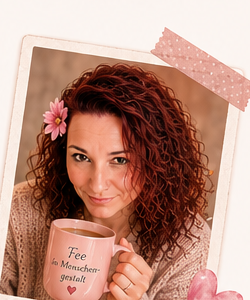

Ein Freigeist
Ich liebe das Leben in all seinen Farben.
✦ Willkommen in meiner magischen Welt
Die Frau hinter Zauber auf Papier♡
Ich bin KI-Autorin aus Herzen und Leidenschaft, kreative Geschichtenerzählerin, Träumerin, Mama von 4 wundervollen Kindern und die kleine Fee in Menschengestalt hinter Zauber auf Papier.
Ich erschaffe Geschichten, die Kinderherzen berühren und zum Träumen einladen.


Wer kennt es nicht? Da will man einmal in der Badewanne liegen, um sich aufzuwärmen ... und dann steht plötzlich eins der Kinder im Bad, wie immer.
Keine Ruhe, liebe Mama, Ruhe!
Also hatte ich eine Idee.
Ich habe meinen Kindern erzählt: „Ich bin eine Meerjungfrau. Wenn ich nass werde, erscheint meine Flosse.“
Und wenn jemand meine Magie sieht, verliere ich meine Zauberkraft.
Deshalb dürfen sie nicht mehr ins Badezimmer kommen ... sonst habe ich keine Magie mehr.
Das Schlimme daran ist: Wenn ich meine Magie bis zu ihrem 12. Geburtstag verliere, bekommen sie auch keine Flosse.
Ich liebe das Leben in all seinen Farben.
Ich sehe Magie in den kleinen Dingen.
Ich schreibe mit Herz, Fantasie und Gefühl.
Meine größten Abenteuer erlebe ich jeden Tag.
Mein kleiner Glücksmoment.
Comfort Food für die Seele.
Ich liebe gut gelaunte Menschen.
Meine Lieblingsjahreszeit.
Sie inspiriert mich und begleitet mich.
Ich erschaffe, male, schreibe, gestalte.
Ein Stück Glück für Kopf und Herz.
Mein größter Schatz. Für sie schreibe ich.

Ich arbeite mit KI, aber meine Geschichten kommen aus meinem Inneren. Die KI ist mein Werkzeug, das mir hilft, meine Ideen noch kreativer umzusetzen. Die Fantasie, die Emotionen und die Botschaften entstehen in meinem Herzen.
Jedes Buch ist ein Stück von mir. Echt. Herzlich. Magisch.Ich glaube an Magie. An Fantasie. An Liebe in freier Form. Und ich glaube daran, dass eine gute Geschichte alles verändern kann. ♡
Meine Bücher entdecken ♥